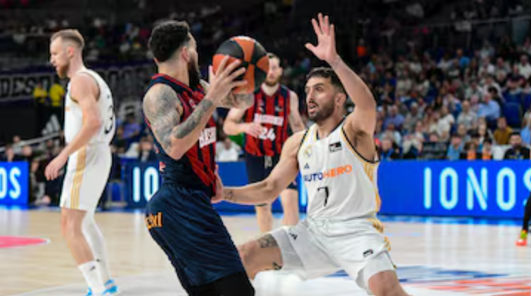

Al fin una buena noticia para el Baskonia
Markus Howard renueva hasta 2028.
Fecha: 13/05/2024

Markus Howard renueva hasta 2028.
Fecha: 13/05/2024
Victoria del equipo de Chus Mateo que no vale para coger la primera plaza. La victoria de Unicaja les deja como segundos de la liga regular.
Fecha: 12/05/2024
